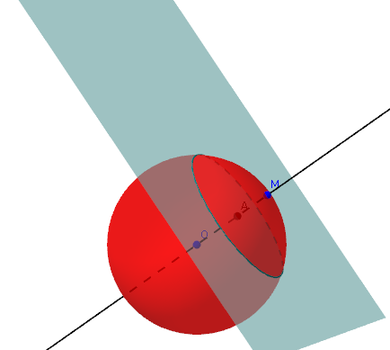
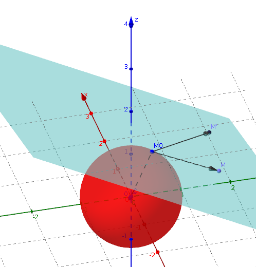
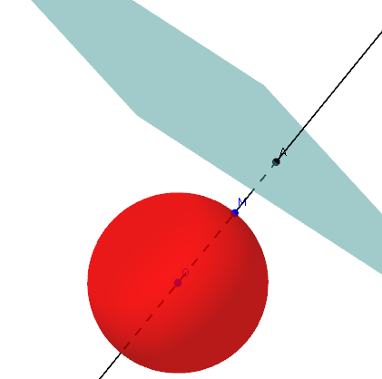
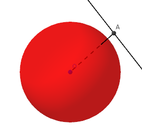
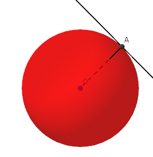
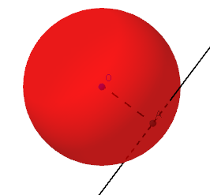
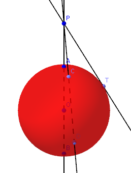

| Choisissez votre langue ! | Choose your language ! |
Définitions
Nous avons déjà donné la définition des sphères et de leurs plans tangents dans . We have already given the definition of spheres and their tangent planes in .
définition 1
On appelle
'rayon'
d'une sphère tout segment joignant le centre à un point de la sphère.
definition 1
We call
'radius'
of a sphere any segment joining the center to a point of the sphere.
définition 2
Deux points A et B d'une sphère sont dits '
diamétralement opposés
' si le segment [AB] contient le centre de la sphère.
definition 2
Two points A and B of a sphere are said to be '
diametrically opposite
' if the segment [AB] contains the center of the sphere.
définition 3
On appelle
'diamètre'
d'une sphère tout segment joignant deux points diamétralement opposés. Les diamètres mesurent donc tous 2r où r est le rayon de la sphère.
definition 3
We call
'diameter'
of a sphere any segment joining two diametrically opposite points. The diameters therefore all measure 2r in length where r is the radius of the sphere.
Positions relatives d'une sphère et d'un plan
Soit S une sphère et P un plan dans l'espace à 3 dimensions. Soit O le centre de la sphère, A la projection ortogonale de O sur P. Soit r le rayon de la sphère et d la distance OA, c'est à dire encore la distance de O à P.Relative positions of a sphere and a plane
Let S be a sphere and P a plane in 3-dimensional space. Let O be the center of the sphere, A the orthogonal projection of O onto P. Let r be the radius of the sphere and d the distance OA, i.e. again the distance from O to P.propriété 1
Alors on a les 3 possibilités suivantes : - P et S sont sécants en un cercle.
- P ∩ S ={M} et P est le plan tangent à S en M.
- P ∩ S = ∅.
- Si d < r l'intersection est un cercle.
- Si d=r, le plan est tangent au cercle.
- si d > r les deux ensembles P et S sont disjoints.
property 1
So we have the following 3 possibilities: - P and S intersect in a circle.
- P ∩ S = {M} and P is the tangent plane to S in M.
- P ∩ S = ∅.
- If d < r the intersection is a circle.
- If d=r, the plane is tangent to the circle.
- if d > r the two sets P and S are disjoint.
La démonstration est immédiate, elle fait intervenir la , la d'un point sur un plan et ses propriétés et le .
Sphère et plan sécants
The demonstration is immediate, it involves the , the of a point on a plan and its properties and the .

Image générée avec GeoGebra3D
Dans ce cas le cercle intersection a un rayon au plus égal à celui de la sphère (par pythagore toujours).
Dans ce cas le cercle intersection a un rayon au plus égal à celui de la sphère (par pythagore toujours).
Image generated with GeoGebra3D
In this case the intersection circle has a radius at most equal to that of the sphere (by Pythagoras again).
In this case the intersection circle has a radius at most equal to that of the sphere (by Pythagoras again).
définition 4
Les '
grands cercles
' d'une sphère sont, par définition, les intersections de la sphère avec un plan passant par l'origine.
definition 4
The '
great circles
' of a sphere are, by definition, the intersections of the sphere with a plane passing through the origin.
Les grands cercles ont donc le même rayon et même centre que la sphère.
Sphère et plan tangents
The great circles therefore have the same radius and same center as the sphere.
Tangent sphere and plane

Image générée avec GeoGebra3D
Sphère et plan disjoints
Image generated with GeoGebra3D
Disjoint sphere and plane

Image générée avec GeoGebra3D
Image generated with GeoGebra3D
propriété 2
En outre si Δ est la droite orthogonale en A à P, Δ est un axe de symétrie pour la figure S ∩ P.
property 2
Furthermore if Δ is the orthogonal line to P at A, Δ is an axis of symmetry for the set S ∩ P.
Cela résulte du fait que Δ passe toujours par le centre de la sphère, que la sphère est globalement invariante dans la symétrie orthogonale par rapport à toute droite passant par son centre et que P est globalement invariant dans la symétrie par rapport à toute droite qui lui est orthogonale.
Positions relatives d'une sphère et d'une droite
La situation est tout à fait comparable à celle qui précède. This is because Δ always passes through the center of the sphere, that the sphere is globally invariant by a reflection to any line passing through its center, and that P is globally invariant by a reflection with respect to any line that is orthogonal to it.
Relative positions of a sphere and a straight line
The situation is quite similar to the one above.propriété 3
Si O est le centre de la sphère S de rayon r et A sa projection orthogonale sur D : - Si AO > r intersection vide
- Si AO=r , un unique point d'intersection, on dit que la droite est tangente à la sphère
- Si AO < r , deux points d'intersection, on dit que la droite est sécante à la sphère
property 3
If O is the center of the sphere S of radius r and A its orthogonal projection on D: - If AO > r empty intersection
- If AO=r , a single point of intersection, the line is said to be tangent to the sphere
- If AO < r , two points of intersection, we say that the line is secant to the sphere
|  |  |  |
Images générées avec GeoGebra3D
On se ramène à la dimension 2 en considérant le plan défini par la droite d et le point O.
On suppose r2 ≥ r1. Dans ces conditions :
On se ramène à la dimension 2 en considérant le plan défini par la droite d et le point O.
Positions relatives de deux sphères
Soient S1 et S2 deux sphères de l'espace, non concentriques et soient O1 et O2 leurs centres respectifs, r1 et r2 leurs rayons, Δ la droite (O1,O2) et d la distance O1O2.On suppose r2 ≥ r1. Dans ces conditions :
Images generated with GeoGebra3D
We come back to dimension 2 by considering the plane defined by the line d and the point O.
We suppose r2 ≥ r1. In these conditions :
We come back to dimension 2 by considering the plane defined by the line d and the point O.
Relative positions of two spheres
Let S1 and S2 be two non-concentric spheres of space and let O1 and O2 their respective centers, r1 and r2 their radii, Δ the line (O1,O2) and d the distance O1O2.We suppose r2 ≥ r1. In these conditions :
propriété 4
Δ est un axe de symétrie pour la figure S1 ∩ S2. S1 et S2 ne se coupent pas si d > r1+r2 ou d <r2-r1.
S1 et S2 ont un seul point commun M si d=r1+r2 ou d=r2-r1 et les deux sphères ont même plan tangent en M.
Dans tous les autres cas S1 et S2 se coupent en un cercle situé dans un plan orthogonal à Δ.
property 4
Δ is an axis of symmetry for the figure S1 ∩ S2. S1 and S2 do not intersect if d > r1+r2 or d <r2-r1.
S1 and S2 have a single common point M if d=r1+r2 or d= r2-r1 and the two spheres have the same tangent plane at M.
In all other cases S1 and S2 intersect in a circle located in a plane orthogonal to Δ.
Equations en repère orthonormé
Equations in orthonormal frame
propriété 5
Dans un repère orthonormé l'équation de la sphère S de centre A(a,b,c) et de rayon r est
\( \displaystyle (x-a)^{2}+(y-b)^{2}+(z-c)^{2}=r^{2} \)
.
property 5
In an orthonormal frame the equation of the sphere S with center A(a,b,c) and radius r is
\( \displaystyle (x-a)^{2}+(y-b)^{2}+(z-c)^{2}=r^{2} \)
.
Cela provient du fait que M ∈ S ⇔ MA=r ⇔ MA2=r2.
This is because M ∈ S ⇔ MA=r ⇔ MA2=r2.
propriété 6
L'équation du plan tangent en M0(x0,y0,z0) à la sphère de centre A(a,b,c) et de rayon r est
\( \displaystyle \left ( x-a \right )\left ( x_{0}-a \right )+\left ( y-b \right )\left ( y_{0}-b \right )+\left ( z-c \right )\left ( z_{0}-c \right )=0 \)
.
property 6
The equation of the plane tangent at M0(x0,y0,z0) to the sphere with center A(a,b,c) and radius r is
\( \displaystyle \left ( x-a \right )\left ( x_{0}-a \right )+\left ( y-b \right )\left ( y_{0}-b \right )+\left ( z-c \right )\left ( z_{0}-c \right )=0 \)
.
Cela s'obtient en écrivant que si M est sur le plan tangent, le vecteur
\( \displaystyle \overrightarrow{MM_{0}} \)
est orthogonal au vecteur
\( \displaystyle \overrightarrow{AM_{0}} \)
.
Remarque:
En développant l'équation prend la forme
Dans ces conditions :
Remarque:
En développant l'équation prend la forme
\( \displaystyle x^{2}+y^{2}+z^{2}-2ax-2by-2cz+d=0 \)
où\( \displaystyle d=a^{2}+b^{2}+c^{2}-r^{2}=OA^{2}-r^{2} \)
appelée parfois forme ' normale '.Puissance d'un point par rapport à une sphère
Soit P un point de l'espace on mène par P une sécante à la sphère S de centre O qui coupe S en C et D.Dans ces conditions :
This is obtained by writing that if M is on the tangent plane, the vector
\( \displaystyle \overrightarrow{MM_{0}} \)
is orthogonal to the vector
\( \displaystyle \overrightarrow{AM_{0}} \)
.
Note:
By expanding the equation takes the form
In these conditions :
Note:
By expanding the equation takes the form
\( \displaystyle x^{2}+y^{2}+z^{2}-2ax-2by-2cz+d=0 \)
xhere\( \displaystyle d=a^{2}+b^{2}+c^{2}-r^{2}=OA^{2}-r^{2} \)
sometimes called ' normal ' form.Power of a point with respect to a sphere
Let P be a point in space, we lead by P a secant to the sphere S with center O which intersects S in C and D.In these conditions :
propriété 7
Le produit
\( \displaystyle \overline{PC}.\overline{PD} \)
est constant. Il est encore égal à PT2 si T est le point de contact d'une tangente issue de P.
Il est encore égal dans tous les cas à d2-r2 où d représente la distance de P à O et r le rayon de la sphère.
On appelle ce nombre la 'puissance de P par rapport à S' notation P(P,S).
property 7
The product
\( \displaystyle \overline{PC}.\overline{PD} \)
is constant. It is still equal to PT2 if T is the point of contact of a tangent from P.
It is still equal in all cases to d2-r2 where d represents the distance from P to O and r the radius of the sphere.
This number is called the 'power of P with respect to S' notation P(P,S).

Image générée avec GeoGebra3D
Pour la démonstration on se ramène à la dimension 2 en considérant le plan passant par la sécante et le point O centre de la sphère.
Il suffit alors de considérer la démonstration pour le plan ( ).
Remarque:
Si M(X,Y,Z) la puissance de M par rapport à la sphère S de centre A(a,b,c) et de rayon r est donc :
Pour la démonstration on se ramène à la dimension 2 en considérant le plan passant par la sécante et le point O centre de la sphère.
Il suffit alors de considérer la démonstration pour le plan ( ).
Remarque:
Si M(X,Y,Z) la puissance de M par rapport à la sphère S de centre A(a,b,c) et de rayon r est donc :
\( \displaystyle P(M,S)=(X-a)^{2}+(Y-b)^{2}+(Z-c)^{2}-r^{2} \)
Soit en développant :\( \displaystyle X^{2}+Y^{2}+Z^{2}-2aX-2bY-2cZ+d \)
ou\( \displaystyle d=a^{2}+b^{2}+c^{2}-r^{2} \)
Donc
Image generated with GeoGebra3D
For the demonstration we reduce to dimension 2 by considering the plane passing through the secant and the point O center of the sphere.
It is then enough to consider the demonstration for the plane ( ).
Note:
If M(X,Y,Z) the power of M with respect to the sphere S with center A(a,b,c) and radius r is therefore:
For the demonstration we reduce to dimension 2 by considering the plane passing through the secant and the point O center of the sphere.
It is then enough to consider the demonstration for the plane ( ).
Note:
If M(X,Y,Z) the power of M with respect to the sphere S with center A(a,b,c) and radius r is therefore:
\( \displaystyle P(M,S)=(X-a)^{2}+(Y-b)^{2}+(Z-c)^{2}-r^{2} \)
or by expanding:\( \displaystyle X^{2}+Y^{2}+Z^{2}-2aX-2bY-2cZ+d \)
where\( \displaystyle d=a^{2}+b^{2}+c^{2}-r^{2} \)
Sopropriété 8
La puissance d'un point par rapport à une sphère s'obtient en remplaçant x,y et z par les coordonnées de M dans le membre de gauche de l'équation normale de cette sphère.
property 8
The power of a point with respect to a sphere is obtained by replacing x,y and z by the coordinates of M in the left member of the normal equation of this sphere.
|
Création Gilles Dubois
Created by Gilles Dubois
|
Janvier 2022
January 2022
|
Version mobile Jquery
Mobile Jquery version
|
|